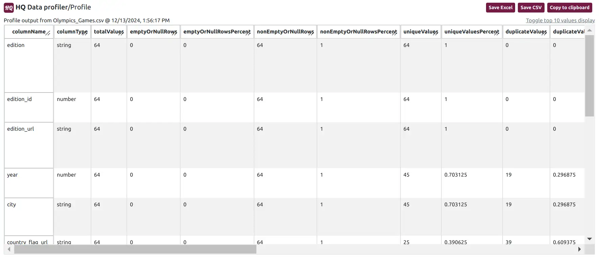
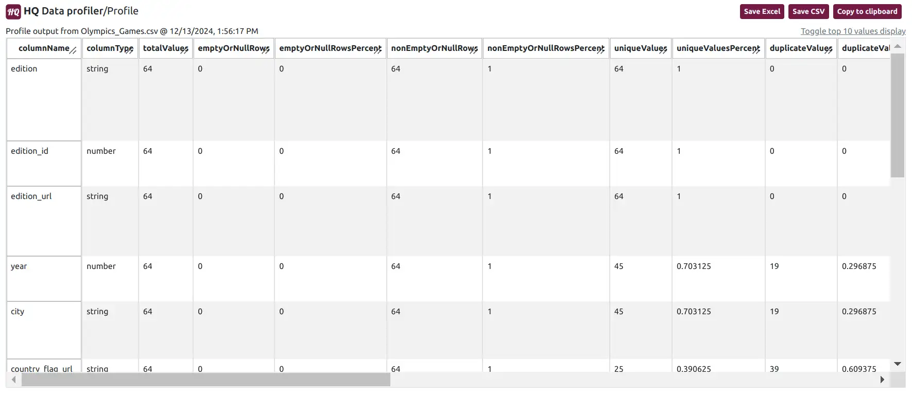

Data profiling is an essential process in any data quality workflow. It provides insights into the structure, completeness, and quality of your dataset, allowing you to address issues before proceeding with analysis.
HQ Data Profiler takes this a step further by offering a fast and versatile workflow to quickly and easily gain these insights. With many data formats supported, include CSV, Excel, JSON, JSON line, Parquet, and XML, HQ Data Profiler ensures that your data insights are just a few clicks away.
Let's dive into the output metrics of the HQ Data Profiler, explaining what they mean and how to use them effectively. We’ll also explore how you can save and share profiling results in various formats.
1. Identifying Errors: Spotting fields with missing values, duplicate fields, and anomalies.
2. Improving Data Quality: Addressing issues like misaligned schemas or outliers.
3. Informed Decision-Making: Gaining insights that guide ingestion and merging.
The HQ Data Profiler organizes its profile into a single screen that is easy to understand.

Column type: The data type of the field (string/number). Auto detected or modified.
Total values: Total number of values found in the field.
Empty or null rows: Number of empty or null values found in the field.
Empty or null rows percent: Percent of empty or null values for the field.
Non empty or null rows: Number of non empty or null values found in the field.
Non empty or null rows percent: Percent of not empty or null values in the field.
Unique values: Number of unique values found in the field.
Unique values percent: Percent of values that are unique for the field.
Duplicate values: Number of duplicate values found in the field.
Duplicate values percent: Percent of values that are duplicates for the field.
Distinct values: Number of distinct values (values with no repititions) found in the field.
Distinct values percent: Percent of values that are distinct for the field.
Min string value: First string value (sorted alphabetically) in the field.
Median string value: Median string value (sorted alphabetically) in the field.
Max string value: Max string value (sorted alphabetically) in the field.
Min string length: First string length in the field.
Median string length: Median string length in the field.
Max string length: Max string length in the field.
Min value: Min value in the field.
Median value: Median value in the field.
Max value: Max value in the field.
Top 10 values: Top 10 values (or strings) by occurence in the field.
Understanding your data is only half the battle. The HQ Data Profiler makes it easy to save and share your profiling results in multiple formats, ensuring that insights are accessible to all stakeholders. Let’s explore these options:
Save to CSV/Excel
The Save to CSV/Excel feature exports your profiling results in a structured, tabular format that can be opened in any spreadsheet or text editor.
Use Cases:
- Sharing raw profiling data with team members who use tools like Python, R, or SQL for further analysis.
- Importing results into dashboards or business intelligence tools.
3. Copy to Clipboard
The Copy to Clipboard feature allows you to quickly copy specific results or sections from the dashboard.
Use Cases:
- Pasting data summaries into Google Docs, email, chat, or reports.
- Quickly transferring insights to other tools without exporting a file.
🔗 [Watch Now: HQ Data Profiler - Understand Data Profiling Results]
In the video, we showcase:
- Profiling a dataset.
- Exploring the output metrics.
- Using the Save to CSV, Save to Excel, and Copy to Clipboard features.
1. Versatile inputs: Supports a variety of data types such as CSV, Excel, JSON, JSONL, Parquet, and XML.
3. Time-saving interface: Profile and analyze your data in just 3 clicks
2. Flexible export options: Save results in formats that suit your workflow, whether technical or non-technical.
4. Intuitive interface: Accessible for professionals at all skill levels.
Data profiling is a critical step in ensuring data quality, and the HQ Data Profiler makes it both easy and effective. From detailed output metrics to flexible export options, this tool empowers you to understand your data and act on the insights it provides.
Ready to take control of your data quality?
- Download HQ Data Profiler today and try it on your datasets.
- Watch the YouTube demo for a step-by-step guide.
- Contact us to share your experience.
HQ Data Profiler takes this a step further by offering a fast and versatile workflow to quickly and easily gain these insights. With many data formats supported, include CSV, Excel, JSON, JSON line, Parquet, and XML, HQ Data Profiler ensures that your data insights are just a few clicks away.
Let's dive into the output metrics of the HQ Data Profiler, explaining what they mean and how to use them effectively. We’ll also explore how you can save and share profiling results in various formats.
Why Data Profiling Results Matter:
Understanding the output of a data profiling tool like HQ Data Profiler is crucial for:1. Identifying Errors: Spotting fields with missing values, duplicate fields, and anomalies.
2. Improving Data Quality: Addressing issues like misaligned schemas or outliers.
3. Informed Decision-Making: Gaining insights that guide ingestion and merging.
The HQ Data Profiler organizes its profile into a single screen that is easy to understand.
HQ Data Profiler Output:
Once your data is profiled, the profile output is displayed in a table with the metrics calculated for each field (a.k.a. column):
Metrics:
Column name: The name of the field in the dataset.Column type: The data type of the field (string/number). Auto detected or modified.
Total values: Total number of values found in the field.
Empty or null rows: Number of empty or null values found in the field.
Empty or null rows percent: Percent of empty or null values for the field.
Non empty or null rows: Number of non empty or null values found in the field.
Non empty or null rows percent: Percent of not empty or null values in the field.
Unique values: Number of unique values found in the field.
Unique values percent: Percent of values that are unique for the field.
Duplicate values: Number of duplicate values found in the field.
Duplicate values percent: Percent of values that are duplicates for the field.
Distinct values: Number of distinct values (values with no repititions) found in the field.
Distinct values percent: Percent of values that are distinct for the field.
Min string value: First string value (sorted alphabetically) in the field.
Median string value: Median string value (sorted alphabetically) in the field.
Max string value: Max string value (sorted alphabetically) in the field.
Min string length: First string length in the field.
Median string length: Median string length in the field.
Max string length: Max string length in the field.
Min value: Min value in the field.
Median value: Median value in the field.
Max value: Max value in the field.
Top 10 values: Top 10 values (or strings) by occurence in the field.
Export and Save Features:
Understanding your data is only half the battle. The HQ Data Profiler makes it easy to save and share your profiling results in multiple formats, ensuring that insights are accessible to all stakeholders. Let’s explore these options:
Save to CSV/Excel
The Save to CSV/Excel feature exports your profiling results in a structured, tabular format that can be opened in any spreadsheet or text editor.
Use Cases:
- Sharing raw profiling data with team members who use tools like Python, R, or SQL for further analysis.
- Importing results into dashboards or business intelligence tools.
3. Copy to Clipboard
The Copy to Clipboard feature allows you to quickly copy specific results or sections from the dashboard.
Use Cases:
- Pasting data summaries into Google Docs, email, chat, or reports.
- Quickly transferring insights to other tools without exporting a file.
Demonstration:
For a complete demonstration of the HQ Data Profiler’s profile output and export features, check out our YouTube video.🔗 [Watch Now: HQ Data Profiler - Understand Data Profiling Results]
In the video, we showcase:
- Profiling a dataset.
- Exploring the output metrics.
- Using the Save to CSV, Save to Excel, and Copy to Clipboard features.
Why Choose HQ Data Profiler?
The HQ Data Profiler is more than just a profiling tool — it’s an targeted solution to help you understanding your data in just seconds. Here’s why it stands out:
1. Versatile inputs: Supports a variety of data types such as CSV, Excel, JSON, JSONL, Parquet, and XML.
3. Time-saving interface: Profile and analyze your data in just 3 clicks
2. Flexible export options: Save results in formats that suit your workflow, whether technical or non-technical.
4. Intuitive interface: Accessible for professionals at all skill levels.
Data profiling is a critical step in ensuring data quality, and the HQ Data Profiler makes it both easy and effective. From detailed output metrics to flexible export options, this tool empowers you to understand your data and act on the insights it provides.
Ready to take control of your data quality?
- Download HQ Data Profiler today and try it on your datasets.
- Watch the YouTube demo for a step-by-step guide.
- Contact us to share your experience.